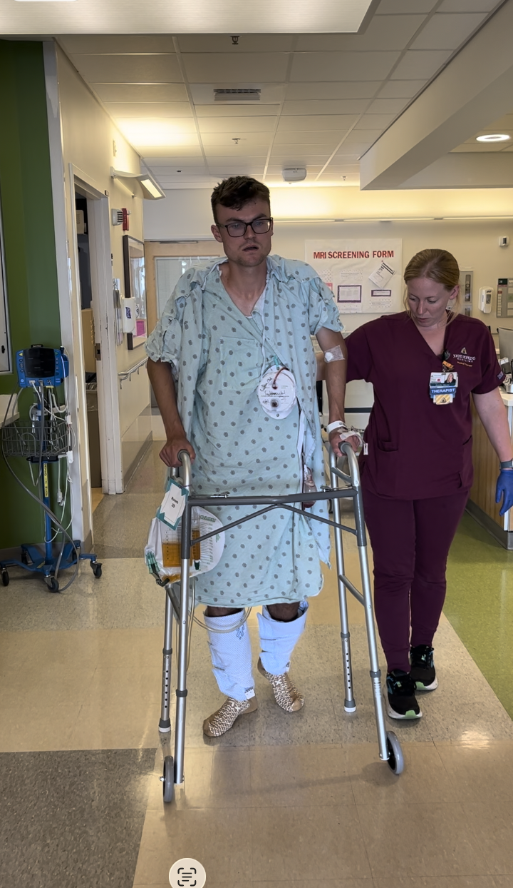

The Road to Back and Better: A Time of Growth Beyond Repair at Syracuse University
Tony DiRubbo - MS Applied Data Science Personal Statement - April 2026

The one word I use to describe the year and a half I have spent at Syracuse is "opportunity". From the moment I began the Applied Data Science program, I viewed graduate study not only as advanced coursework, but as an invitation to test ideas, extend prior work, and transform technical curiosity into applied research and creative systems with real-world impact.
In the summer of 2023, I found myself at a crossroads. I was beginning the final year of my undergraduate degree at St. John Fisher University and, like many students at that stage, I was weighing two very different paths. One option was to enter the workforce immediately and begin building experience. The other was to continue my education and pursue a Master's degree and build upon my data science skills through graduate study. I had become fascinated with the world of data science throughout some of my statistics courses and was possibly interested in continuing to learn more about that field. I applied to numerous graduate programs before the start of my senior year and was accepted to Syracuse that early as well. Throughout my final year at Fisher, I kept going back to the program at Syracuse while planning for my future and decided enrollment would be in my best interest.
My undergraduate work at St. John Fisher emphasized computational thinking within a liberal arts context, where I completed senior thesis research in machine learning for health prediction, contributed to a student research journal, and published an award-winning data visualization article examining remote schooling outcomes in New York City. These projects instilled a strong grounding in statistical reasoning, communication, and ethical data use. In my last two years at Fisher, I realized Syracuse would become the next step. This would be a new environment where I could translate those analytical skills into scalable systems, deeper models, and interdisciplinary research.
I also ran track and field competitively at the Division III level for Fisher. I had won an individual conference title in the spring of my junior year and was continuing to build momentum. The COVID-19 pandemic during my freshman year in Rochester gave me an extra year of eligibility. I was enjoying my running journey and secretly discussed with the Syracuse coach about running with them for my final year of eligibility while in grad school. This was a decision I kept private as I wanted me continuing to run at Syracuse to be a "me" decision and nothing else. It was maybe late September of 2023, and I had the next year all planned out, giving me 6 months of being able to enjoy senior year of college.
Then in March of 2024, everything changed. An MRI picked up a 10cm mass, about the size of a softball, growing on the bottom of my spine. I went to my final undergraduate classes in between various doctor appointments. That summer I traveled all around the northeast, and in August I met with two of the nation's top neurosurgeons from Johns Hopkins. It was noticeably apparent that I was becoming more sick as the mass ate into and damaged my urinary system. For 6 months all I had was uncertainty, no running, no consistent lifestyle, it sounds funny to say, but I looked forward to starting grad school hoping all of this would go away.
I began at Syracuse immediately following major spinal surgery. I left the intensive care unit at Johns Hopkins in Baltimore four days before I was supposed to start on campus. While I was facing a significant amount of uncertainty in my life, the ability to continue my education in areas that interested me proved to be an easy decision. While both mentally and physically challenging, this period sharpened my perspective on time, focus, and purpose. As I would drag my damaged but slowly healing body across campus in the fall of 2024, my education was the only tangible consistency that I had. While it was tough sometimes, my passion for education drove me to have a routine all too critical for these hard times. Graduate school represented both recovery and renewal, an opportunity to build on the foundation I established at St. John Fisher University and to push my work further into my interests in applied machine learning, artificial intelligence, and human-centered system design.
At Syracuse, my academic work has consistently focused on bridging theory and implementation. Coursework in applied machine learning, deep learning, and natural language processing gave me formal tools, while project-based classes encouraged experimentation. Across these settings, I gravitated toward problems at the intersection of human-computer interaction and artificial intelligence, specifically how models are trained, how they are integrated into usable systems, and how people ultimately interact with them.
Program Learning Outcomes
The iSchool defines six learning outcomes that represent satisfactory progress throughout the Applied Data Science program. Over the past two years, I have become a better data scientist through the development of these skills:
Learning Outcome 1: Collect, Store, and Access Data
This outcome means understanding the full lifecycle of data before analysis even begins. It is not enough to simply have data available. A data scientist must know how to retrieve it from an appropriate source, structure it correctly, store it securely, and access it efficiently later. This involves selecting the correct databases, APIs, storage systems, and architectures depending on the context. Whether data lives in a relational database, a cloud warehouse, or a vector store, the professional must ensure it is organized, reliable, and retrievable.
Learning Outcome 2: Create Actionable Insight
This outcome builds on the first. Once data is collected and stored properly, the real goal is to generate insight that drives decision making. Actionable insight means more than descriptive statistics. It means analyzing data in a structured way, understanding stakeholder goals, defining metrics, and translating patterns into recommendations. The full data science lifecycle includes problem definition, data preparation, modeling, evaluation, and deployment.
Learning Outcome 3: Apply Visualization and Predictive Models
Data driven insight becomes more powerful when it is presented clearly. Predictive models help forecast outcomes, while visualizations make complex relationships intuitive. This outcome emphasizes that technical analysis alone is insufficient. A well designed chart or a well validated model can make findings more compelling and accessible, especially to audiences who may not be deeply technical.
Learning Outcome 4: Use Programming Languages
Technical fluency is essential in data science. R and Python are foundational tools in the field. This outcome reflects the need for strong coding ability to clean data, build pipelines, create models, and develop applications. Without programming proficiency, a data scientist cannot operate effectively in modern environments and make implementations/changes to custom solutions employed by their company.
Learning Outcome 5: Communicate Insights
Insight has little value if it cannot be communicated effectively. This outcome emphasizes presentation skills, clarity of explanation, and adaptability to different audiences. Communicating to technical peers requires precision, while communicating to business stakeholders requires clarity and relevance. An iSchooler must be comfortable doing both.
Learning Outcome 6: Apply Ethics
Data driven systems influence real people. Ethical awareness is therefore critical. This includes protecting privacy, preventing bias, ensuring transparency, and understanding the broader societal implications of predictive models. Ethical data science requires intentional design and constant reflection.
Highlight Projects
Project 1: Recipe Companion (LLM Dietician App)
The goal of this project was to design and deploy a fully functional web application that leveraged large language model APIs in a human focused way. We were tasked with building an application that used multiple AI agents, each with a clearly defined responsibility, and orchestrating them to create a seamless user experience. Our application allowed users to log in, input dietary goals, and optionally upload an image of their current food supplies. The system then generated personalized recipe suggestions. The actionable outcome was a fully deployed Streamlit web application that could be used by real individuals to receive customized recommendations.
From a technical perspective, the project utilized Python, LLM APIs, retrieval augmented generation techniques, vector databases, and Streamlit for hosting. We also followed proper Git version control principles throughout development. My specific contributions centered on the memory agent and assistance with the retrieval augmented generation agent. The memory agent was responsible for reading from and writing to a user specific data table that preserved conversation history and dietary goals. This ensured that each user's data was isolated and persistent across sessions. I also contributed to the RAG component, which gathered recipes from online sources and stored them in a searchable vector database.
This project demonstrated multiple learning outcomes. Learning Outcome One was met through the collection and storage of recipe data and user information. We retrieved recipes from external sources, stored them in a structured RAG database, and designed user tables that allowed secure data access. Learning Outcome Two was fulfilled because the application transformed raw user inputs and stored recipes into actionable dietary recommendations. The system did not simply display data. It analyzed and synthesized it into practical suggestions. Learning Outcome Four was heavily utilized, as Python was the backbone of the entire system. Designing agents, integrating APIs, managing memory, and deploying the application required advanced programming skills. Learning Outcome Six was addressed through privacy conscious design. The memory agent separated user data to prevent leakage, demonstrating awareness of ethical considerations in AI systems.
Project 2: Data Warehouse Optimized ETL
The goal of this project was to design a complete data warehouse system capable of storing and analyzing movies, actors, ratings, reviews, staff, and production locations. We began by collecting raw data from IMDb related sources. The data was cleaned and structured before being loaded into a Snowflake data warehouse. We used SQL and Python for data manipulation, dbt Cloud for transformation workflows, and PowerBI for visualization and reporting. The actionable outcome of this project was a fully operational warehouse and dashboard system that allowed users to explore movie performance metrics.
We defined business goals and key performance indicators at the start of the project, ensuring that our warehouse schema supported meaningful insights. At the end of the semester, we presented our PowerBI dashboards to the class, showcasing trends in ratings, actor performance, and production patterns. This was a collaborative effort in which all team members contributed across collection, transformation, and visualization stages. That shared responsibility strengthened each of our skills across the entire pipeline.
Learning Outcome One was clearly demonstrated through data collection, cleaning, database storage, and warehouse architecture design. We identified appropriate technologies at each stage, ensuring scalability and efficiency. Learning Outcome Two was met by defining business metrics early and structuring the warehouse around them. This allowed us to generate insights aligned with stakeholder goals. Learning Outcome Three was fulfilled through predictive metrics and interactive PowerBI dashboards that visualized performance trends. Learning Outcome Five was strongly demonstrated during our final presentation, where we communicated technical findings in an accessible way to classmates and instructors.
Project 3: LLM Knowledge Distillation
The goal of this project was to provide a complete tutorial on how to perform a model distillation to create a new, specialized, smaller large language model from a parent large language model. The outcome would be a paper which showed that I was able to successfully delve deeper into a topic which we briefly discussed during my time in Natural Language Processing. The paper was accompanied by a Jupyter notebook which utilized the pyTorch deep learning framework so that a reader could follow on with the exact code I used when creating the paper. I presented my findings from the paper at a symposium at the end of the semester where I delivered actionable insights on how successful this model distillation tutorial was. Since this was an individual project I needed to become very familiar with model distillation techniques in order to be confident in my insights and presentation.
The first learning outcome I employed in this project was the fourth learning outcome, as I needed to have familiarity with Python to quickly learn the PyTorch framework to perform the model distillation. The fifth outcome was performed as I was the only assumed expert on model distillation at the symposium, as everyone presented projects on different topics they found interesting. Because of this I needed to be clear and familiar with the terms so that everyone in attendance would be familiar and interested in my work. I covered the final learning outcome when I discussed the ethics of performing a modeling distillation, and discussing the pros and cons of taking someone else's model to train it on work you specifically want it to focus on/specialize in.
Academic Tracks
Each iSchooler in the Applied Data Science program has to choose a track to complete alongside their core courses. This is a smaller subset of data science which a student will become more familiar with in their additional courses. During my time at the iSchool I had an opportunity to complete two tracks: Artificial Intelligence and Data Pipelines and Platforms. I intentionally chose both because I wanted to balance emerging innovation in AI with the foundational systems knowledge needed to have a complete data pipeline.
Artificial Intelligence Track
I chose to pursue my master's degree because I wanted to stay on top of current topics in computer science. The end of my junior year of undergraduate study saw the rise of ChatGPT, and I viewed large language models as revolutionary. I wanted to understand how they worked, not just use them. I learned many key takeaways from my different AI courses at Syracuse. In Applied Machine Learning, I learned the statistics and mathematical foundations behind predictive modeling. That course strengthened my understanding of how models learn from data and generalize to new inputs. In Natural Language Processing, I studied the fundamental objective of large language models, predicting the next token in a sequence, which clarified how seemingly complex systems are built on structured probabilistic principles. Deep Learning exposed me to neural network architectures that compose modern large language models, while Human Centered AI Applications taught me how to efficiently integrate AI powered tools into real technology stacks.
Data Pipelines and Platforms Track
During my undergraduate studies, I became interested in database design and the possibilities that arise from structured data systems. My Database Management and Administration course strengthened my foundation in relational systems and optimization. Following this, Data Warehousing and Big Data expanded my understanding of distributed systems and large scale processing. I learned that not all databases are the same, and small architectural details can significantly impact performance and reliability. These lessons directly supported my two co-op experiences, both of which were heavily database and warehouse driven. I felt like I was able to pick up and start using both companies' data tools very quickly because while I might not have been familiar with the tool, I had a strong understanding of the concepts thanks to my education at the iSchool.
Looking back on this track selection process, I stayed current with AI while building strong data engineering foundations. If I could choose again, I would follow the same two tracks because together they provide both innovation and infrastructure expertise, continuing the thread I have had throughout this portfolio review course of being the complete package. While applying for data science jobs this past fall and earlier this winter, I felt confident being able to stand out as a strong candidate in fields of AI engineering and data pipeline and platform management thanks to these iSchool pathways.
Professional Experience
This focus was reinforced through my role as a Graduate Student Researcher in the Nexis Technology Lab. Working with a small team of graduate researchers, I have contributed to semester-based projects centered on adaptive AI resources for education. These projects require translating abstract AI capabilities into tools that support real users, a process that has sharpened my ability to explain technical decisions, evaluate impact, and communicate outcomes to both technical and non-technical audiences. Presenting this work at poster symposiums has further developed my ability to articulate research significance clearly and concisely.
Beyond the lab, Syracuse provided opportunities to test my academic learning in professional contexts. Through two competitive co-op placements at CooperVision and Tessy Corporation, I applied graduate-level concepts directly to production systems. At CooperVision, I supported large-scale data pipelines and governance processes, working across regional systems to ensure data quality and usability for finance, sustainability, and customer-facing teams. At Tessy Corporation, I have been designing a JSON-driven workflow engine and contributing to backend services in a .NET production environment, developing database procedures that connected frontend interfaces to operational logic. These experiences have validated my research direction by demonstrating how machine learning, data infrastructure, and system design converge in real organizations. These experiences were doors that were opened in part by my enrollment at Syracuse University, as iSchool skills taught me the critical networking and interview skills to secure these competitive positions.
Conclusion
If I could speak to myself in the summer of 2023 while deciding whether to attend Syracuse, I would confidently say that I made the correct choice. Over the past two years, I systematically achieved all six program learning outcomes. I learned to collect, store, and access data through hands-on warehouse construction and AI memory architecture. I learned to create actionable insight by defining metrics, building applications, and conducting research. I applied visualization and predictive modeling through dashboards and machine learning experiments. I strengthened my Python proficiency through AI agent design and deep learning frameworks. I communicated insights through presentations, symposiums, and demonstrations. I continuously reflected on ethics, privacy, and fairness when designing systems. More importantly, these outcomes were not achieved in isolation. They reinforced one another. My AI knowledge depended on my data pipeline skills. My communication abilities depended on my analytical depth. My ethical awareness guided my technical design. The combination of Artificial Intelligence and Data Pipelines and Platforms made me a well rounded data professional. I am comfortable building models and building the systems that support them. I can innovate while ensuring reliability. I can analyze deeply while communicating clearly.
Now If I could tell the version of me who just checked out of the ICU one thing, I would tell him that he is the strongest version of myself. Choosing Syracuse University at that time was not simply about earning a degree. It was about becoming the complete package. As I move forward into my professional career, I do so with confidence, knowing that the foundation built over these two years fully prepared me to operate at the intersection of AI innovation and data infrastructure.